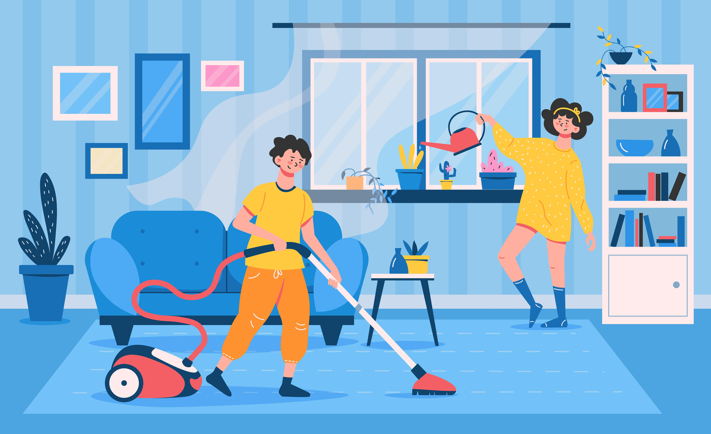

When it comes to keeping your home fresh and spotless, Carpet Cleaning Blackpool is the name you can trust. We’ve been around since 2002, rolling up our sleeves to tackle all things dirty, dusty, and downright dingy. Whether it’s your carpet, upholstery, mattress, or leather suite, we’ve got the tools, expertise, and a little bit of humor to get the job done right.
Carpets are like sponges for dirt, dust, and everything your shoes bring in from outside. Regular vacuuming helps, but sometimes your carpet needs a bit more love—like the deep cleaning kind. That’s where we step in. At Carpet Cleaning Blackpool, we use professional-grade equipment to dive deep into the fibers of your carpet, removing stains, odors, and the unseen grime that’s been lurking there for years.
Fun Fact: Did you know that your carpet can hold up to four times its weight in dirt? It’s like a dirty little secret right under your feet!
Your upholstery puts up with a lot. From spilled coffee to pet hair and everything in between, it’s no wonder it starts to look a little worse for wear over time. But don’t worry—our upholstery cleaning service is like a spa day for your furniture. We gently clean and refresh your couches, chairs, and anything else you like to sit on, making them look and feel as good as new.
Pro Tip: If your favorite chair starts looking more like a furball than a piece of furniture, it might be time to give us a call.
We spend about a third of our lives on our mattresses, so it’s a little unsettling to think about what might be lurking in there. Dust mites, allergens, and who knows what else can make your mattress less than inviting. Our mattress cleaning service not only removes these unwelcome guests but also helps extend the life of your mattress. A clean mattress means a good night’s sleep, and who doesn’t want that?
Sleepy Fact: Your mattress might double in weight over ten years just from dust mites and skin flakes. Gross, right? But we’re here to help you lighten that load.
Leather furniture is a classic choice, but it needs a little extra care to keep it looking its best. Over time, leather can become cracked, faded, and stained. Our leather suite cleaning service is designed to restore its natural beauty, so your leather couch or chair can continue to be the centerpiece of your living room. We use special conditioners and techniques to clean and nourish the leather, bringing back its shine and softness.
Leather Love: Did you know that leather can last up to four times longer than fabric upholstery if properly maintained? That’s a pretty good reason to show it some TLC.
We know there are other cleaning services out there, but what sets Carpet Cleaning Blackpool apart is our commitment to quality, reliability, and a touch of humor. We’re a family-run business, and we treat every home we clean like it’s our own. Our experienced, insured, and certified cleaners take pride in their work, making sure that you’re not just satisfied but delighted with the results.
Final Thought: Cleaning might not be the most exciting thing in the world, but a clean home sure does feel good. Let Carpet Cleaning Blackpool take care of the dirty work so you can get back to enjoying your space.
Ready to freshen up your home? Give us a call today, and let’s make your carpets, upholstery, mattress, and leather furniture look their absolute best!